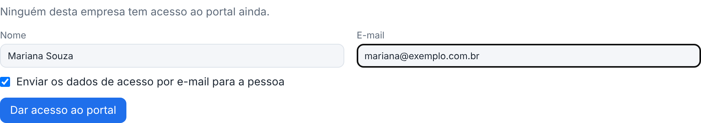
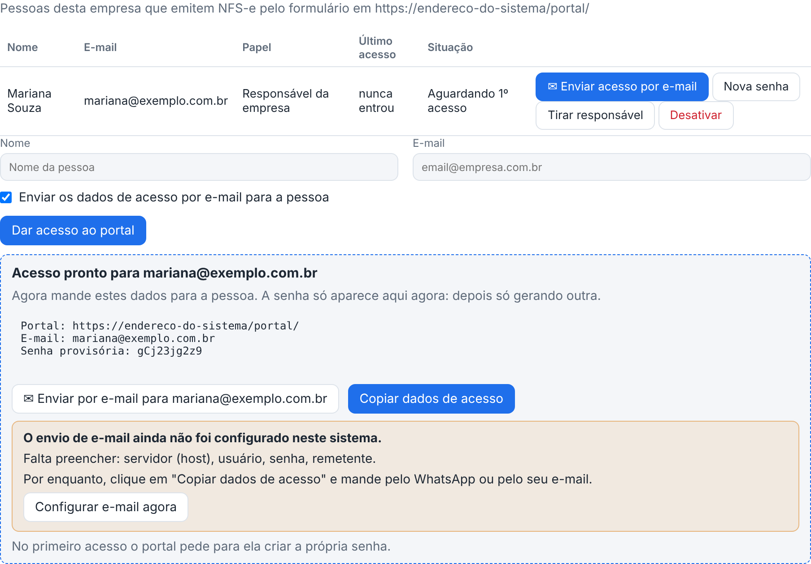

Dar acesso ao portal e enviar por e-mail
Crie o login de quem emite as notas na empresa cliente e mande os dados de acesso.
checklist Antes de começar
- Tenha o nome e o e-mail da pessoa da empresa cliente.
- A primeira pessoa cadastrada vira Responsável da empresa: ela mesma pode convidar colegas pelo portal depois.
- Para mandar por e-mail automático, o e-mail do sistema precisa estar configurado (Sistema › E-mail). Sem isso, dá para copiar e mandar pelo WhatsApp.
-
Abra a ficha da empresa e vá em "Portal do cliente"
Clique na linha da empresa e desça até Portal do cliente.
-
Preencha e clique em "Dar acesso ao portal"
Digite nome e e-mail. Deixe marcado Enviar os dados de acesso por e-mail e clique em Dar acesso ao portal.

-
Confira se o e-mail saiu
Se o e-mail está configurado, aparece "✓ E-mail enviado". Se não está, aparece um aviso: clique em Copiar dados de acesso e mande pelo WhatsApp, ou em Configurar e-mail agora.

Outras ações na linha da pessoa
| Botão | O que faz |
|---|---|
| ✉ Enviar acesso por e-mail | Gera uma senha provisória nova e manda por e-mail num clique. A senha antiga para de funcionar. |
| Nova senha | Gera uma senha provisória nova e mostra na tela para você copiar. |
| Tornar responsável / Tirar responsável | Responsável convida e desativa colegas pelo portal. Emissor só emite. |
| Desativar | A pessoa não entra mais no portal. |
Se der errado
| O que aconteceu | O que fazer |
|---|---|
| "O envio de e-mail ainda não foi configurado". | Configure uma vez em Sistema › E-mail, ou copie os dados e mande pelo WhatsApp. |
| A pessoa diz que o e-mail não chegou. | Peça para olhar o spam. Depois clique em ✉ Enviar acesso por e-mail de novo. |
| A pessoa esqueceu a senha. | Ela pode usar "Esqueci minha senha" no portal, ou você clica em ✉ Enviar acesso por e-mail. |
← Voltar para a Central de Ajuda
Última revisão: 07/11/2026